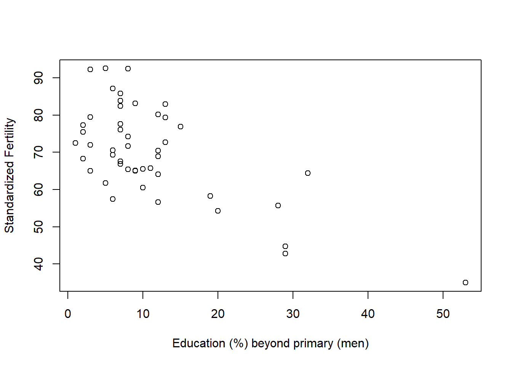

There are two parts: Part I (Causal Inference), Part II (Prediction). Use clear causal language and avoid causal claims for purely predictive models. Show work for any calculations.The data and required libraries are loaded with the chunk below.
data(Seatbelts, package = "datasets")
data(swiss, package = "datasets")
sb_df <- cbind.data.frame(as.data.frame(Seatbelts))
sb_df$year <- rep(1969:1984, each = 12)
sb_df$month <- rep(1:12, times = 16)
sw <- swissResearch Question: Did the introduction of the 1983 seat belt law in the UK reduce the number of monthly driver fatalities?
Dataset: Seatbelts
DriversKilled(monthly count)law(0 = before Jan 1983, 1 = after)monthkms(traffic volume)PetrolPriceVanKilled
tapply() is
recommended.m1 <- lm(DriversKilled ~ law, data = sb_df)
summary(m1)##
## Call:
## lm(formula = DriversKilled ~ law, data = sb_df)
##
## Residuals:
## Min 1Q Median 3Q Max
## -46.870 -17.870 -5.565 14.130 72.130
##
## Coefficients:
## Estimate Std. Error t value Pr(>|t|)
## (Intercept) 125.870 1.849 68.082 < 2e-16 ***
## law -25.609 5.342 -4.794 3.29e-06 ***
## ---
## Signif. codes: 0 '***' 0.001 '**' 0.01 '*' 0.05 '.' 0.1 ' ' 1
##
## Residual standard error: 24.03 on 190 degrees of freedom
## Multiple R-squared: 0.1079, Adjusted R-squared: 0.1032
## F-statistic: 22.98 on 1 and 190 DF, p-value: 3.288e-06Confounding & Observational Design Name one specific variable that could confound the relationship between law and DriversKilled. Explain why it is a confounder.
External Validity Would you expect this result to generalize to other countries? Would it generalize to the modern-day? Explain why or why not using correct causal language.
Research Question: Can socio-economic indicators predict fertility rates in Swiss provinces?
Dataset:
swiss
provinceFertilityEducationCatholicAgricultureInfant.Mortality
plot(Fertility ~ Education, data = sw,
xlab = "Education (%) beyond primary (men)",
ylab = "Standardized Fertility")
lm(), write a script
to model the effect of education quality on fertility.##
## Call:
## lm(formula = Fertility ~ Education, data = sw)
##
## Residuals:
## Min 1Q Median 3Q Max
## -17.036 -6.711 -1.011 9.526 19.689
##
## Coefficients:
## Estimate Std. Error t value Pr(>|t|)
## (Intercept) 79.6101 2.1041 37.836 < 2e-16 ***
## Education -0.8624 0.1448 -5.954 3.66e-07 ***
## ---
## Signif. codes: 0 '***' 0.001 '**' 0.01 '*' 0.05 '.' 0.1 ' ' 1
##
## Residual standard error: 9.446 on 45 degrees of freedom
## Multiple R-squared: 0.4406, Adjusted R-squared: 0.4282
## F-statistic: 35.45 on 1 and 45 DF, p-value: 3.659e-07Assume the output shows: \(\hat{\alpha} = 79.6\), \(\hat{\beta} = -0.86\).
Education increases by 1 unit (1 percentage point of men
with post-primary education), how does predicted fertility
change?fertility when Education =
15.fertility using Education,
Catholic, and Infant.Mortality. Write a script
to evaluate the model, then write out the fitted equation using:##
## Call:
## lm(formula = Fertility ~ Education + Catholic, data = sw, subset = Infant.Mortality)
##
## Residuals:
## Min 1Q Median 3Q Max
## -6.8511 -2.4434 0.4041 2.8316 10.9581
##
## Coefficients:
## Estimate Std. Error t value Pr(>|t|)
## (Intercept) 65.89808 1.03559 63.633 < 2e-16 ***
## Education -0.46979 0.06553 -7.169 6.46e-09 ***
## Catholic 0.21073 0.04126 5.107 6.76e-06 ***
## ---
## Signif. codes: 0 '***' 0.001 '**' 0.01 '*' 0.05 '.' 0.1 ' ' 1
##
## Residual standard error: 3.886 on 44 degrees of freedom
## Multiple R-squared: 0.6288, Adjusted R-squared: 0.6119
## F-statistic: 37.27 on 2 and 44 DF, p-value: 3.397e-10